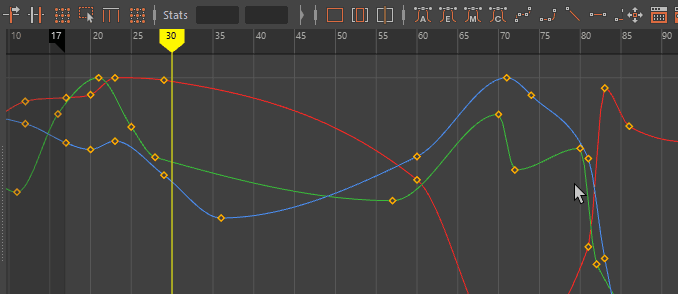

在曲线图编辑器(Graph Editor)中，单击  ，或者选择“编辑 > 变换工具 > 区域关键帧工具”(Edit > Transformation Tools > Region Keys Tool)，以使用“区域关键帧工具”(Region Keys Tool)进行区域选择。
，或者选择“编辑 > 变换工具 > 区域关键帧工具”(Edit > Transformation Tools > Region Keys Tool)，以使用“区域关键帧工具”(Region Keys Tool)进行区域选择。

区域关键帧工具(Region Keys Tool)
通过“区域关键帧工具”(Region Keys Tool)，可以在图表视图区域中拖动以选择一个区域，然后在该区域内在时间和值上缩放关键帧。
在曲线图编辑器(Graph Editor)中，单击 ，或者选择“编辑 > 变换工具 > 区域关键帧工具”(Edit > Transformation Tools > Region Keys Tool)，以使用“区域关键帧工具”(Region Keys Tool)进行区域选择。
区域关键帧工具(Region Keys Tool)
通过“区域关键帧工具”(Region Keys Tool)，可以在图表视图区域中拖动以选择一个区域，然后在该区域内在时间和值上缩放关键帧。